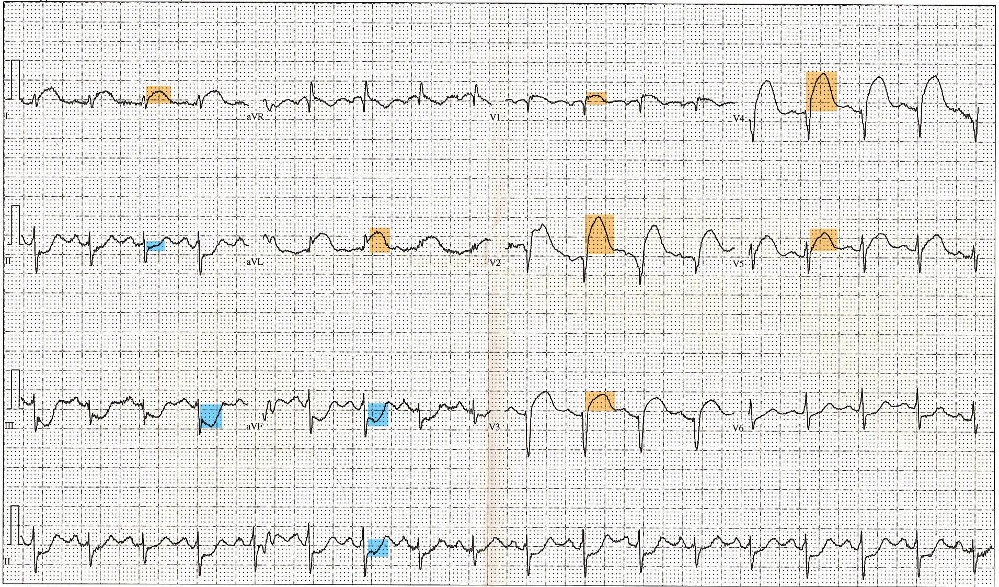

定義與定位
這個病是什麼？在分類樹的哪個位置？跟隔壁的病靠什麼分開？
| 項目 | 重點 |
|---|---|
| 本質 | 斑塊破裂／侵蝕 ＋ 血小板血栓 → 休息時也缺血（與 CCS 的關鍵分野） |
| 分類位置 | CAD 的急性分支；旁邊是慢性分支 CCS |
| 內部三分 | UA ／ NSTEMI ／ STEMI——完整名詞地圖在 CAD，不在這裡重抄 |
| 這篇的職責 | 分流與處置：誰要立刻進導管室、誰可以等、藥怎麼給、之後盯什麼 |
病因與機制
為什麼會發生？病生理鏈條長什麼樣？
flowchart TD A["易損斑塊<br/>薄纖維帽"] --> B["破裂／侵蝕"] B --> C["膠原暴露<br/>血小板黏附活化"] C --> D["血栓形成"] D --> E["次全阻塞<br/>心內膜下缺血"] D --> F["完全阻塞<br/>全層缺血"] E --> G["ST 下降／T 倒置<br/>UA・NSTEMI"] F --> H["ST 上升<br/>STEMI"] classDef key fill:#8e0000,stroke:#5f0000,color:#fff,font-weight:bold classDef mid fill:#263238,stroke:#000,color:#fff,font-weight:bold class H key class G mid
 下半圖示心內膜下缺血：缺血侷限內層時，injury vector 的體表投影常表現為 ST depression；圖中把心肌橫切面、細胞外電位、體表投影與 12 導程波形連在一起。Source: Okada et al., Cardiovasc Eng Technol 2020, Figure 2（CC BY 4.0）。
下半圖示心內膜下缺血：缺血侷限內層時，injury vector 的體表投影常表現為 ST depression；圖中把心肌橫切面、細胞外電位、體表投影與 12 導程波形連在一起。Source: Okada et al., Cardiovasc Eng Technol 2020, Figure 2（CC BY 4.0）。

全層 injury 的方向朝向覆蓋病灶的導程時出現 ST elevation；本例 V1–V4／I／aVL 抬高，III／aVF 出現 reciprocal depression。這是「完全阻塞 → 全層缺血 → ST 上升」的典型對照，但真實臨床仍有 OMI 不達 STEMI 閾值。Source: Wikimedia Commons — 12 Lead EKG ST Elevation tracing color coded（public domain）。臨床表現
典型病人長什麼樣？哪些症狀是幾乎一定有、哪些是提示性的？
- 典型：休息時或輕微活動即發生的胸骨後壓迫感，持續 >20 分鐘不緩解，伴冒冷汗、噁心、瀕死感
- 提示性（anginal equivalent）：新發生的呼吸困難、上腹痛、下巴／頸／肩／背／手臂痛、極度疲倦、單純冒冷汗、突發暈厥
- 少見但重要：完全無痛的沉默梗塞——DM、老年人、女性、CKD、術後、失智者；表現可能只有意識改變、低血壓、心衰或血糖失控
→ 相關主訴流程：Chest pain↗、Dyspnea（Workup）
診斷
診斷標準是什麼？要開哪些檢查？哪個是 gold standard？
分流決策樹
flowchart TD
A["疑似 ACS<br/>10 分鐘內 EKG"] --> B{"ST 上升<br/>或 equivalent？"}
B -->|是| C["啟動導管室<br/>不等 troponin"]
B -->|否| D["hs-cTn 0/1h<br/>＋ serial EKG"]
D --> E{"血流動力不穩<br/>惡性心律不整<br/>持續痛？"}
E -->|是| C
E -->|否| F["風險分層<br/>GRACE・TIMI"]
F --> G["中／高風險<br/>住院期間侵入性"]
F --> H["低風險<br/>進一步分層"]
classDef red fill:#8e0000,stroke:#5f0000,color:#fff,font-weight:bold
classDef dark fill:#263238,stroke:#000,color:#fff,font-weight:bold
class C red
class A,G dark
診斷條件
| 診斷條件 | 內容 |
|---|---|
| 心肌梗塞 | troponin 上升／下降（超過 99th percentile）＋ 至少一項缺血證據：症狀、新的缺血性 EKG 變化、新 Q 波、影像顯示新的節段運動異常、導管見血栓 |
| STEMI | 新出現的 J 點 ST 上升，≥2 個相鄰導程：一般導程 ≥1 mm；V2–V3 例外（男 ≥40 歲 ≥2 mm、男 <40 歲 ≥2.5 mm、女性任何年齡 ≥1.5 mm）。閾值細節與 equivalent 清單見 EKG ischemia |
| NSTE-ACS | 符合缺血但無持續 ST 上升。troponin ＋ → NSTEMI；troponin − → UA |
要開的檢查：EKG ischemia（serial，症狀持續時每 15–30 分鐘重做）、Troponin（0/1h）、Echocardiography（看 EF、節段運動、併發症、排除 mimics）、Coronary angiography↗
鑑別診斷
要跟誰分清楚？靠什麼分？
| 要排除的 | 支持它的線索 | 怎麼排除 |
|---|---|---|
| Aortic dissection | 撕裂痛瞬間到最痛、延伸到背、兩側血壓／脈搏差、新舒張期雜音、縱膈變寬 | CTA。先排除再抗栓——最高優先 |
| Pulmonary embolism | 呼吸困難與低血氧為主、單側下肢腫、右心負荷、S1Q3T3 | CTA；troponin 也可升高 |
| Pericarditis↗／心肌炎 | 姿勢與呼吸相關的尖銳痛、摩擦音、廣泛凹型 ST 上升＋PR 段下降、無對應性 ST 下降 | 見 EKG ischemia mimics 表；心肌炎 troponin 明顯升高但冠脈通暢 |
| Takotsubo↗ | 情緒／生理壓力事件後、前壁 ST 上升＋深廣 T 倒置、心尖球狀化、冠脈通暢 | 導管＋超音波；常無法在術前區分 |
| MINOCA | 導管顯示無明顯阻塞（<50%）但確實是 MI | 機制可能是斑塊侵蝕、痙攣、SCAD、栓塞、微血管；需進一步影像 |
| 食道破裂／食道痙攣、氣胸、膽道疾病 | 相應病史與影像 | 見 Chest pain↗ |
治療
第一線是什麼？什麼情況升級？
① 所有 ACS 的共同基底
| 藥物 | 要點 |
|---|---|
| Aspirin | 立刻咀嚼負荷劑量（一般 162–325 mg），之後低劑量長期 |
| P2Y12 抑制劑 | 要做 PCI 者，ticagrelor 或 prasugrel 優先於 clopidogrel。若 NSTE-ACS 預計導管 >24 小時後才做，可考慮上游先給 clopidogrel 或 ticagrelor |
| 抗凝 | UFH／enoxaparin／bivalirudin，依再灌流策略選。fondaparinux 不可用來支持 PCI（導管內血栓風險，2025 指引列為 Class 3: Harm）——若病人已在用 fondaparinux 而要做 PCI，術中必須追加 UFH |
| 高強度 Statin | 所有 ACS，可同時起始 ezetimibe。已用到最大耐受劑量而 LDL-C ≥70 mg/dL → 加非 statin 藥物 |
| Beta blocker↗ | 口服，無禁忌時早期起始（見禁忌表） |
| 氧氣 | 只在 SpO₂ <90% 時給。常規給氧無益甚至有害 |
| 止痛／硝酸鹽 | 硝酸鹽緩解症狀（不改善預後）；嗎啡保留給硝酸鹽無效者，且會延遲 P2Y12 吸收 |
② STEMI：再灌流的時間窗
| 情境 | 目標 |
|---|---|
| 院前已辨識 STEMI | 優先直送可做 PCI 的醫院，first medical contact → device ≤90 分鐘 |
| 已在可做 PCI 的醫院 | door-to-device（door-to-balloon）≤90 分鐘 |
| 在不可做 PCI 的醫院，預估 FMC→device ≤120 分鐘，或有溶栓禁忌 | 轉送做 primary PCI |
| 症狀 <12 小時，但預估 PCI 延遲 >120 分鐘 | 給溶栓（無禁忌時），door-to-needle ≤30 分鐘，給完立即轉送可做 PCI 的中心 |
③ NSTE-ACS：導管時機由風險決定
| 風險層級 | 判準 | 策略 |
|---|---|---|
| 極高風險 | 血流動力不穩／心因性休克、藥物無法緩解的持續胸痛、致命性心律不整、急性心衰、機械性併發症、反覆動態 ST 變化 | 立即侵入性（等同 STEMI 處理） |
| 中／高風險 | troponin ＋、動態 ST-T 變化、GRACE 分數偏高、EF 下降、糖尿病、CKD、近期 PCI／CABG 病史 | 住院期間安排侵入性評估並意圖血管重建（Class 1）；高風險者於 24 小時內進行是合理的（Class 2a） |
| 低風險 | 上述皆無 | 常規侵入性或選擇性侵入性（先進一步分層） |
④ 手術與再灌流的操作要點
| 項目 | 建議 |
|---|---|
| 入路 | 橈動脈優於股動脈（減少出血、血管併發症與死亡率） |
| 血管內影像 | 複雜病變的 PCI 建議用 IVUS／OCT 導引 |
| 完全血管重建 | STEMI 與 NSTE-ACS 都建議完全血管重建。STEMI 的非犯罪病變可單次或分階段處理，傾向單次處理 |
| 心因性休克 | 犯罪血管緊急血管重建；不建議同時常規處理非犯罪血管 |
| 機械循環支持 | 選擇性的 AMI 合併心因性休克可考慮微軸流幫浦；出血、肢體缺血、腎衰竭併發症較高 |
| 輸血 | ACS 合併貧血且未活動性出血者，維持 Hb 約 10 g/dL 可能合理 |
⑤ 出院後
- DAPT 預設至少 12 個月（無高出血風險者）
- 減少出血風險的策略：有腸胃道出血風險 → 加 PPI；已耐受 ticagrelor 的 DAPT → PCI 後 ≥1 個月可轉為 ticagrelor 單藥；需長期抗凝者 → PCI 後 1–4 週停 aspirin，保留 P2Y12（優先 clopidogrel）
- 血脂：起始或調整劑量後 4–8 週追空腹血脂
- 心臟復健轉介（無法或不願到院者可用居家式方案）
- 其他：ACEI／ARB（尤其 EF 下降、DM、高血壓）、EF ≤40% 者評估 MRA 與 ICD
併發症與預後
住院時要盯什麼？出院後會怎麼樣？
| 時間 | 併發症 | 線索 |
|---|---|---|
| 最初數小時 | VT／VF、心室早期收縮、心搏過緩與 AV block（下壁梗塞常見）、心因性 Shock、急性心衰／肺水腫 | 持續心律監測；下壁梗塞看有無 AV block |
| 2–7 天（再灌流時代已少見但致命） | 游離壁破裂 → 心包填塞、電機械分離；心室中膈破裂 → 新的粗糙全收縮期雜音＋急性右心衰；乳頭肌斷裂 → 急性重度 MR、突發肺水腫、雜音可能很輕（後內側乳頭肌只有單一血流供應，最常斷，多伴下壁梗塞） | 突然的低血壓／新雜音／肺水腫 → 立刻心臟超音波 |
| 數天–數週 | 心室內附壁血栓（大前壁梗塞、EF 低）→ 栓塞；左心室膨大（aneurysm）→ 持續 ST 上升、心衰、心律不整 | 超音波；考慮抗凝 |
| 1–8 週 | Dressler syndrome（梗塞後自體免疫性心包炎）：發燒、心包摩擦音、心包積液、發炎指標升高 | 與早期梗塞後心包炎（<1 週、局部）區分 |
- 預後因子：總缺血時間、梗塞範圍與 EF、Killip 分級（I 無心衰 → IV 心因性休克）、GRACE 分數、年齡、腎功能、是否完成完全血管重建、出院後藥物順從度與 LDL-C 是否達標
禁忌與陷阱
相關連結
- CAD — 名詞地圖（CCS／UA／NSTEMI／STEMI）、MI 五個 Type、慢性期處置
- EKG ischemia — ST 上升閾值、梗塞定位、STEMI equivalent 與 mimics 完整清單
- Troponin — 0/1h algorithm、心肌損傷 vs 心肌梗塞、非 ACS 升高原因
- Chest pain↗ — 主訴層的 can't-miss 與到床邊的前 5 分鐘
- PCI↗、Fibrinolytics↗、Antiplatelet、Shock、ICD